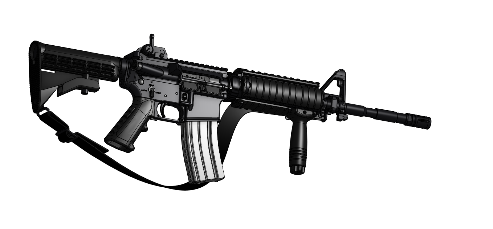

M4A1
5.56×45 · Carbine · In-house at TTM
The TTM M4A1 is a service carbine built to tight manufacturing discipline. Engineered and produced at our headquarters, the platform combines a proven 5.56 architecture with in-house receiver work, barrel finishing, and full assembly validation.
Configured for general-purpose and CQB roles, every unit is serialized and tracked from raw stock through functional testing before it leaves the workshop floor.
← All systemsPlatform imagery

Platform data
Technical specifications
- Cartridge: 5.56×45mm NATO
- Platform: M4A1 carbine
- Operating system: Direct impingement, select-fire
- Barrel: 14.5″ · 1:7″ RH twist
- Overall length: 33.0″ / 29.8″ collapsed
- Weight: ~6.4–6.9 lb unloaded
- Magazines: STANAG · 30 rd typical
- Rate of fire: 700–950 RPM
- Muzzle velocity: ~880–900 m/s (M855-class)
- Effective range: 500 m point · 600 m area
- Controls: Ambidextrous-capable layout
- Suppressor: 1/2×28 thread / QD ready
- Manufacturing: 100% TTM in-house
Manufacturing
Every M4A1 built at TTM is machined, assembled, and inspected on our workshop floor. Critical assemblies — bolt carrier group, barrel extension, and fire-control group — stay in-house under the same dimensional standards as our other small-arms programs.
Internal cutaway studies document the complete operating cycle for training and engineering reference. The 5.56 NATO ecosystem remains the deepest magazine and ammunition logistics base in the catalog.